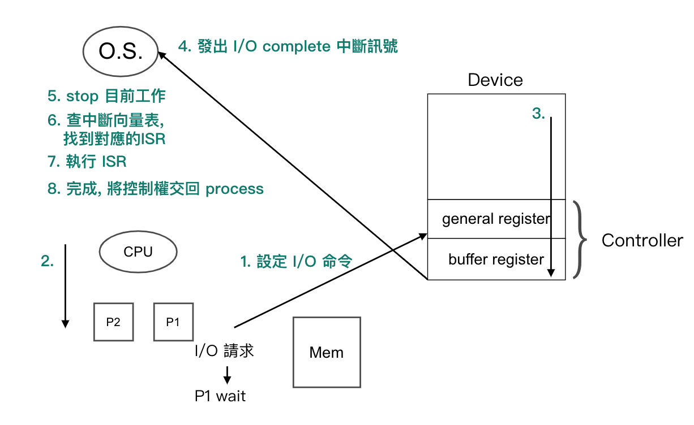
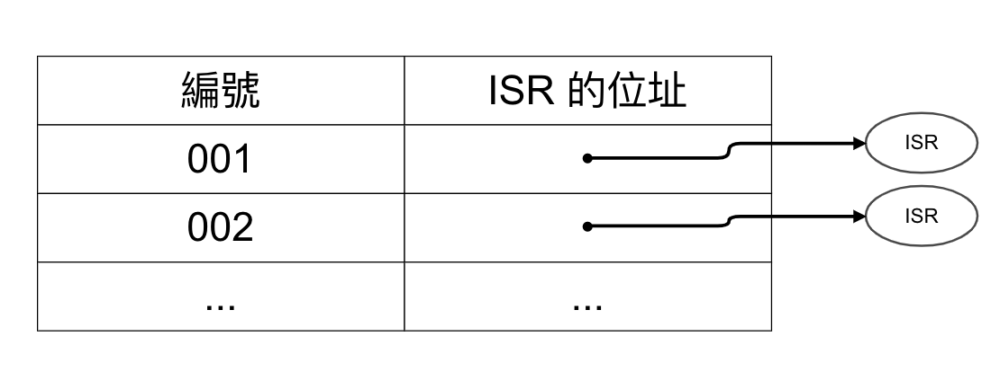
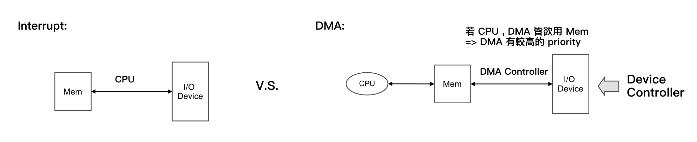
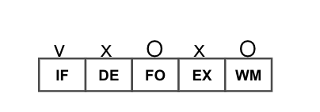
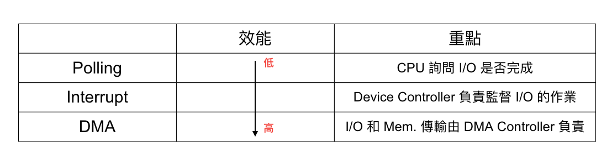
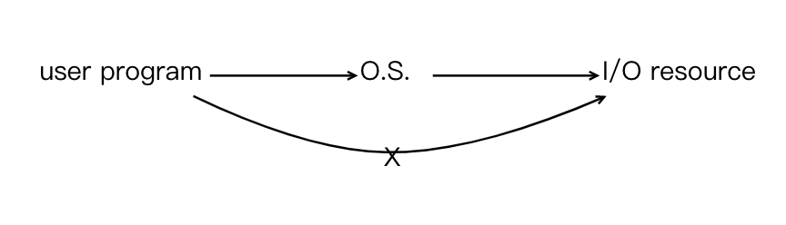
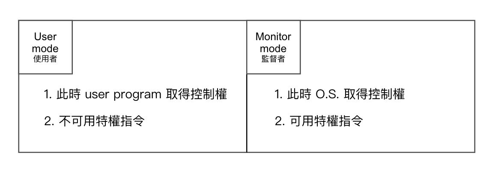
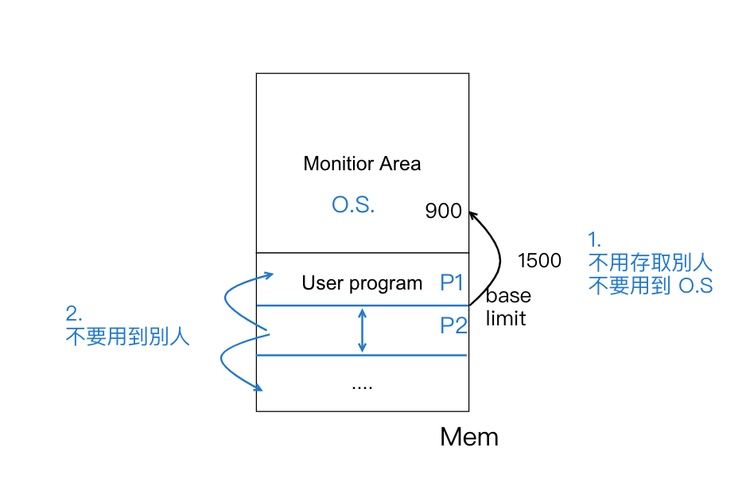
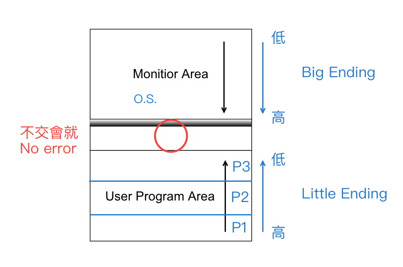

Chapter3-作業系統-電腦系統結構
3.2 電腦系統結構
I/O process 方式
Polling I/O (詢問式) 又稱 busy wait 或 "programmed I/O"
Def:
- 當一 process 需 wait I/O, 過程中 CPU 需不斷反覆詢問 I/O 是否完成
- 若過程中將 CPU 切換給其他 process, 可能造成資料遺失的現象
Interrupt I/O (中斷式)
Def: 當 process 需 wait I/O 由 Device Controller 負責監督 I/O 是否完成, 若完成則通知 O.S. 接手處理 5 ~ 8

Note: 過程中 CPU 不需介入故可切給另一 process 專心處理之
Interrupt vector table

ISR: Interrupt Service Routine(中斷服務常式)

說明：
- 採 interrupt 時, "I/O 和 Mem 傳輸", CPU 需參與監督, 改良後 next
- 採 DMA (Direct Memory Access 直接記憶體存取) Def: 由 DMA Controller 負責 I/O 和 Mem. 傳輸 (CPU 不需介入)
DMA 會採用 "Cycle stealing" 的技術
- 週期竊取: 偷取 FO 和 WM 此 2 週期
說明：

Note: DMA 適用於高速的 I/O Device (ex: disk)
Summary

中斷種類

Note: (Non-maskable interrupt) => NMI 不可遮蔽式中斷
- 為 Priority 最高的 interrupt
- O.S. 需無條件接收, 且立即執行之 (Hardware error)
Hardware Protection
I/O protection
-
目的：避免 user program 直接存取 I/O resource
-
圖示：
-
作法：
- 採用 "Dual Mode", 將 I/O 相關的指令, 設為特權指令
- 避免 user program 去改變中斷向量表或 ISR
-
Dual Mode (雙重模式) 
-
Ex: 下列哪些為特權指令(O.S.)？
- setup timer
- read clock
- clear mem,
- close interrupt
- mode switch
Sol: 1, 3, 4, 5
CPU protection
- 目的：避免 CPU 長期被某個 process 持有
- 作法：設定一個 Timer (計時器), 一旦 process 取得 CPU 就開始倒數, 當時間為 0 , 則換其他 process 執行
Memory protection
- 目的：避免 user program 之執行影響到其他的 user program 或 monitor program (O.S.) 之執行
- 圖：
- 分成：
- Monitor Area Protection
- User Area Protection
1. Monitor Area Protection
- 作法：採用 **"Fence Register"**紀錄 M.A.大小
- Problem: M.A. 的大小會更動(因為 error routine 是動態載入), 故所有的 user program 需動態更新位址, 需有 Dynamic Binding (只要沒有就不行,程式不會動)
- Solution: 
2. User Program Area Protection
- 作法：採用 "base/limit" register來記錄各 user program 的起始位址跟 U.P. 的大小